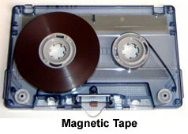

Chapter 3: Storage Devices and Media
Serial access
When using serial access it is necessary to start at the beginning of the file and then access each record in turn until the required record is found. In the example above, to find the record for car 15, it is necessary to first read all of the preceding records (that is, 1 to 14) until the required record is located.
It is primarily used on magnetic tape systems and is essentially a very slow form of data access. It is used in applications where speed of access, or where the order in which the data is accessed, isn't important (for example in utility billing, clearing back cheques, or producing payslips).
When the original magnetic tape (called the master file) needs updating, an additional tape (called a transaction file) is required. The transaction file contains all the new data to allow the master file to be updated (although the transaction file is very often another tape, the new data could be stored on a different medium). The updated tape is referred to as the new master file. When using tapes, the records on both master file and transaction file must be sorted in the same order (for example, sorted by customer number if it is a billing application — the field used to sort the records is often referred to as a key field).
This is an example of how a master file (MF) can be updated using a Transaction File (TF). The scenario here is a book shop that sells books. All of the books held in stock are stored on the MF in ISBN order — the ISBN acts as the key field for each record (each different book title will have its record made up of the ISBN, title of the book, author, genre, cost price, and selling price). All the changes during the day will be stored on the TF — if a book sells, if new books come in, if a book is out of print, and so on. At the end of each day, the MF is updated using the new data stored on the TF. The basic steps in the update process are shown below:
- At the end of the day, the TF is sorted in the same order as the MF (this will be done using the ISBN which is known here as the key field)
- A new master file (NMF) is created to store the updated records of the books in the shop<
-
the first record in the TF is then read and the first record in the
MF is also read
- The two records are compared with each other
- If the key field on the MF is bigger than the key field on the TF, then no transactions took place, and the MF record is written to the NMF; a new MF record is now read
- If the key field on the MF is the same the key field on the TF, then a transaction took place and the new record from the TF is written to the NMF; the next record from both the MF and TF are now read
- If the the transaction file indicates a deletion then the record is simply not written to the NMF and a new record from each file is read
- If the key field on the MF is greater than the key field on the TF, then the record doesn't yet exist and a new record is created on the NMF and the record is written from the TF to the NMF; a new Tf record is now read
- The process is repeated untill the end of the MF
- Finally, any remaining records on the TF are written to the NMF
Example
The Master File (MF) contains the following records with key fields shown:
| 1 | 2 | 3 | 4 | 6 | 8 | 9 |
The Transaction File (TF) contains the following records with key fields shown:
| 1 | 2 | 4 | 5 | 7 | 8 | 10 |
The first record from each file is read. The key field both match, so the record with key field 1 is written from the TF to the new master file (NMF):
| 1 |
The second record is then read from the MF and the TF; again the keys are equal so the record on the TF with the kwy field 2 is now written to the NMF
| 1 | 2 |
The third record is then read from the MF and TF; this time the key fields are different (3 and 4). The MF key is smaller than the TF key, so the MF record with key 3 is now written to the NMF:
| 1 | 2 | 3 |
The next record from the MF is read This time they are both 4 so the record on the TF is written to the NMF:
| 1 | 2 | 3 | 4 |
The next record from both MF and TF are read (6 and 5). The MF key is greater than the TF key, so a new record is created with key field 5. The new record is written to the NMF from the TF:
| 1 | 2 | 3 | 4 | 5 |
The next record on the TF is read. Again they are different (6 and 7). THe MF key is smaller than the TF key, so the MF record with key 6 is now written to the NMF:
| 1 | 2 | 3 | 4 | 5 | 6 |
This process continues untill all the records have been checked and the final NMF emerges
| 1 | 2 | 3 | 4 | 5 | 6 | 7 | 8 | 9 | 10 |